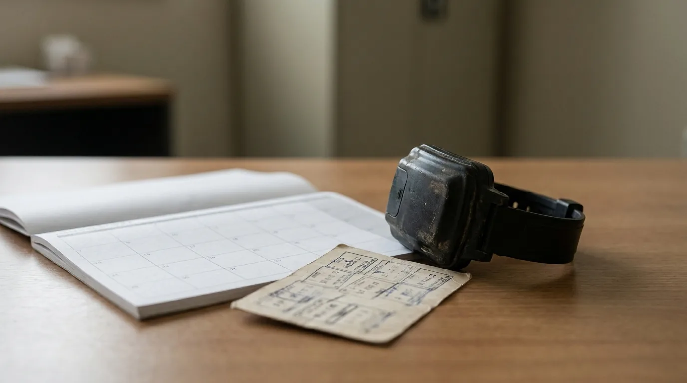

Liberdade Provisória: Quem Tem Direito e Como Funciona
Quando alguém da família é preso, uma expressão domina as conversas nas primeiras horas: liberdade provisória. Ela aparece na boca do advogado, nas pesquisas da madrugada e na esperança de todo mundo que está do lado de fora. Mas poucos sabem explicar o que ela é de verdade, quem tem direito e o que acontece se o juiz negar.
A confusão tem consequência prática. Família que não entende como esse direito funciona aceita qualquer promessa, paga o que não devia ou se desespera à toa com uma negativa que ainda pode ser revertida. Entender as regras do jogo é o primeiro passo para atravessar o processo com decisões racionais.
Este guia explica o que é a liberdade provisória, em que situações ela costuma ser concedida e como funciona a fiança. Mostra também quais condições o juiz pode impor e o que a defesa faz quando o pedido é negado. Tudo em linguagem direta, pensada para quem nunca precisou lidar com o sistema penal.
O que é liberdade provisória (e o que ela não é)
A liberdade provisória é o direito de responder ao processo criminal em liberdade, mediante condições fixadas pelo juiz. Está prevista no Código de Processo Penal e parte de um princípio da Constituição: ninguém é considerado culpado antes da condenação definitiva. A prisão antes da sentença é a exceção, não a regra.
O nome engana, e vale desfazer três confusões comuns.
Primeiro: liberdade provisória não é absolvição. O processo continua normalmente, com audiências, provas e sentença ao final. A pessoa solta pode ser condenada, assim como a pessoa presa pode ser absolvida. O que muda é onde cada uma espera o desfecho.
Segundo: liberdade provisória não é a mesma coisa que relaxamento da prisão. O relaxamento acontece quando a prisão foi ilegal, um flagrante forjado ou um prazo descumprido, por exemplo. A liberdade provisória parte do cenário oposto: a prisão foi legal, mas manter a pessoa presa é desnecessário. São portas diferentes que levam ao mesmo corredor.
Terceiro: ela também não se confunde com a revogação da prisão preventiva. A preventiva é a prisão decretada pelo juiz durante o processo, e a revogação é o pedido para derrubá-la depois. A liberdade provisória atua antes, em geral na audiência de custódia, a apresentação do preso ao juiz em até 24 horas, evitando que a prisão em flagrante se transforme em preventiva.
O "provisória" do nome, aliás, não significa que a liberdade tem prazo para acabar. Significa que ela está vinculada ao processo: dura enquanto a pessoa cumprir as condições impostas, em regra até a decisão final do caso.
A tabela resume as três portas para não confundir na conversa com o advogado:
| Instituto | Quando entra em cena | O que resolve |
|---|---|---|
| Relaxamento da prisão | Prisão ilegal (flagrante forjado, prazo descumprido, falha grave no procedimento) | Desfaz a prisão viciada; a investigação pode continuar com a pessoa solta |
| Liberdade provisória | Prisão legal, mas desnecessária | Solta mediante condições, evitando que o flagrante vire preventiva |
| Revogação da preventiva | Prisão preventiva já decretada que perdeu os fundamentos | Derruba a preventiva no curso do processo |
Saber em qual linha o caso se encaixa muda a estratégia, os prazos e até o tipo de pedido que a defesa protocola. É a primeira pergunta que um advogado criminalista responde ao ler o auto de prisão.
Atenção: liberdade provisória não é favor nem privilégio. É um direito previsto em lei para as situações em que a prisão antecipada não se justifica. Tratá-la como "jeitinho" é um erro que só beneficia quem vende facilidade que não existe.
Quem tem direito à liberdade provisória
Não existe uma lista fechada de crimes com direito automático. O juiz analisa caso a caso, e a pergunta que ele responde é sempre a mesma: existe motivo concreto para manter essa pessoa presa antes do julgamento?
Os motivos que autorizam a prisão preventiva estão no art. 312 do Código de Processo Penal: garantia da ordem pública, conveniência da instrução criminal (proteger provas e testemunhas), garantia de aplicação da lei penal (risco de fuga) e perigo gerado pelo estado de liberdade. Se nenhum deles estiver presente, com base em fatos, não em suposições, a liberdade provisória é o caminho natural.
Na prática, alguns fatores pesam a favor do preso:
- Crime cometido sem violência ou grave ameaça contra pessoa;
- Ser réu primário (nunca ter sido condenado antes) e ter bons antecedentes;
- Residência fixa e trabalho comprovados na comarca (a cidade ou região atendida pelo fórum onde corre o processo);
- Vínculos familiares sólidos, especialmente filhos pequenos;
- Colaboração com a investigação desde o início.
E outros pesam contra: reincidência, descumprimento de medidas em processos anteriores, ameaças a testemunhas, indícios de que a pessoa pretende fugir. Repare que tudo gira em torno de fatos verificáveis. Desde a reforma de 2019, a gravidade abstrata do crime, sozinha, não sustenta uma preventiva.
Note que cada fator favorável precisa virar papel para existir no processo. "Ele trabalha" não é argumento; carteira assinada, contrato de prestação de serviços ou declaração do empregador com CNPJ, sim. "Mora aqui há anos" também não; conta de luz, contrato de aluguel e cadastro em posto de saúde, sim. É por isso que a corrida da família nas primeiras horas vale tanto: o juiz decide com base no que está nos autos, e o que ficou na gaveta de casa simplesmente não existe para a decisão.
E os crimes ditos inafiançáveis, como tráfico, tortura e racismo? Aqui mora uma das maiores confusões do noticiário. Inafiançável significa que não cabe fiança, aquele depósito em dinheiro. Não significa prisão automática. O Supremo Tribunal Federal já decidiu que mesmo nesses crimes o juiz deve analisar a necessidade da prisão caso a caso, podendo conceder liberdade provisória sem fiança. Quem afirma que "tráfico não tem liberdade provisória" está repetindo uma regra que deixou de valer.
Fiança: quanto custa, quem define e se o dinheiro volta
A fiança é uma garantia em dinheiro (ou bens) depositada para assegurar que a pessoa vai acompanhar o processo até o fim. Ela funciona como um compromisso financeiro: se a pessoa comparece a todos os atos, o valor volta ao final; se descumpre, perde ao menos metade, além de arriscar a própria prisão.
Quem define depende da gravidade do caso. Em crimes com pena máxima de até 4 anos, o próprio delegado pode fixar o valor da fiança na delegacia, entre 1 e 100 salários mínimos, e a pessoa é solta sem esperar audiência. Acima disso, só o juiz pode conceder, com valores entre 10 e 200 salários mínimos, ajustados à situação econômica do preso. Detalhamos essa primeira etapa na delegacia no guia sobre prisão em flagrante.
A lei também protege quem não tem dinheiro. O juiz pode reduzir a fiança em até dois terços ou dispensá-la por completo quando a situação econômica do preso não permite pagar. Nesse caso, o depósito é substituído pelas obrigações de comparecer aos atos do processo e de não mudar de endereço sem avisar. Pobreza não pode ser motivo para alguém ficar preso.
| Situação | Quem define o valor | Valor de referência |
|---|---|---|
| Pena máxima até 4 anos | Delegado, na própria delegacia | 1 a 100 salários mínimos |
| Pena máxima acima de 4 anos | Juiz | 10 a 200 salários mínimos |
| Preso sem condições financeiras | Juiz | Redução de até 2/3 ou dispensa |
| Crime inafiançável | Juiz | Sem fiança, mas liberdade provisória possível com outras condições |
E o dinheiro, volta? Volta, com atualização, se a pessoa comparecer a todos os atos e cumprir as condições até o fim do processo. Em caso de condenação, o valor pode ser usado para abater custas, multa e indenização à vítima, devolvendo-se o restante. Já o descumprimento tem preço: quem quebra a fiança, faltando a um ato do processo sem justificativa, perde metade do valor e ainda pode ter a prisão decretada.
Dica prática: guarde o comprovante do depósito da fiança e anote todas as datas de comparecimento. A devolução ao final do processo não é automática em muitos casos: a defesa precisa requerer, e o comprovante acelera tudo.
As condições da soltura: medidas cautelares
Liberdade provisória quase nunca vem sozinha. O juiz costuma acompanhá-la de medidas cautelares, as condições previstas no art. 319 do Código de Processo Penal que substituem a prisão. As mais comuns:
- Comparecimento periódico em juízo, em geral mensal, para informar atividades;
- Proibição de se aproximar ou manter contato com determinadas pessoas;
- Proibição de frequentar certos lugares, como o local dos fatos;
- Proibição de se ausentar da comarca sem autorização do juiz;
- Recolhimento domiciliar no período noturno e nos dias de folga;
- Monitoração eletrônica, a tornozeleira;
- Suspensão do exercício de função pública ou atividade econômica, em casos específicos.
O juiz escolhe as medidas conforme o caso, e pode combinar mais de uma. O critério legal é a proporcionalidade: a restrição deve ser suficiente para neutralizar o risco, sem ir além do necessário.
Cumprir as condições é o que mantém a liberdade de pé. O descumprimento autoriza o juiz a substituir a medida por outra mais dura, acrescentar novas restrições ou, em último caso, decretar a prisão preventiva. Faltar ao comparecimento mensal por esquecimento, mudar de cidade sem avisar, aparecer no lugar proibido: cada deslize fica registrado no processo e mina a confiança que sustentou a soltura.

O outro lado da moeda merece registro: as cautelares também podem ser revistas. Se o tempo passa, o processo avança e o risco diminui, a defesa pode pedir o abrandamento, como a retirada da tornozeleira ou a autorização para viajar a trabalho. A liberdade provisória é dinâmica, e um acompanhamento atento faz diferença do início ao fim.
Como a defesa atua (e o que fazer se o pedido for negado)
O pedido de liberdade provisória nasce, na maioria dos casos, na audiência de custódia, realizada em até 24 horas após a prisão em flagrante. É ali que o advogado apresenta os documentos que humanizam o preso diante do juiz: comprovante de residência, prova de trabalho, certidões, vínculos familiares. Sem esse material, a decisão sai com base apenas no auto de prisão, que conta só a versão da abordagem.
Por isso o tempo da família é tão valioso. Enquanto a audiência não acontece, reunir documentos é a contribuição mais concreta possível. E constituir a defesa cedo multiplica o efeito: o advogado conversa com o preso antes, alinha o que será dito e transforma papéis soltos em argumento jurídico. O investimento nessa fase, aliás, costuma ser detalhado em contrato próprio, como explicamos no guia sobre quanto custa um advogado criminalista.
Se a liberdade provisória for negada e a preventiva decretada, o jogo continua. A defesa pode:
- Pedir a revogação ao próprio juiz quando surgem fatos novos: endereço comprovado, emprego formalizado, testemunhas já ouvidas, problema de saúde que a prisão agrava;
- Entrar com habeas corpus no Tribunal de Justiça, um pedido urgente para soltar quem está preso ilegalmente, cabível quando a decisão tem defeito como a fundamentação genérica que serviria para qualquer preso;
- Cobrar a revisão obrigatória da preventiva, que a lei manda o juiz refazer a cada 90 dias.
Nenhuma negativa é definitiva. Processos são vivos, situações mudam, e a prisão que se justificava em janeiro pode não se justificar em abril. O que não funciona é abandonar o caso à própria sorte e esperar que o sistema reveja tudo sozinho.
Do lado da família, três atitudes atrapalham mais do que ajudam, e vale nomeá-las. A primeira é procurar quem promete soltura garantida: ninguém pode garantir decisão judicial, e quem promete está vendendo ilusão ou algo pior. A segunda é pressionar o preso a "explicar tudo" no primeiro contato com a polícia sem orientação, gastando na hora errada os argumentos que valeriam ouro na audiência. A terceira é desaparecer depois da soltura: a liberdade provisória é um compromisso contínuo, e a família que ajuda a lembrar datas de comparecimento e a guardar comprovantes protege a liberdade conquistada.
O acompanhamento das condições, aliás, é trabalho de gente grande. Um calendário compartilhado com as datas de comparecimento, uma pasta com os comprovantes carimbados e o hábito de avisar o advogado antes de qualquer mudança de endereço ou viagem: rotinas simples que mantêm o processo limpo e constroem, aos poucos, o histórico de confiança que pesa a favor nas próximas decisões.
Se a prisão aconteceu em Florianópolis ou na região, a Mussi Advocacia & Consultoria, do advogado José Lucas Mussi, OAB/SC 42.936, atua em audiências de custódia, pedidos de liberdade provisória e habeas corpus. Conhecer os direitos de quem foi preso ajuda a família a agir rápido e na direção certa.
Perguntas frequentes sobre liberdade provisória
Liberdade provisória significa que a pessoa foi inocentada?
Não. A pessoa continua respondendo ao processo normalmente, com audiências e sentença ao final. A liberdade provisória define apenas onde ela espera o julgamento: em casa, cumprindo condições, em vez de presa.
Quanto tempo dura a liberdade provisória?
Em regra, até o fim do processo, desde que as condições sejam cumpridas. Ela pode ser revogada se a pessoa descumprir as medidas impostas ou se surgirem motivos novos que justifiquem a prisão preventiva.
Não tenho dinheiro para pagar a fiança. E agora?
Informe a defesa imediatamente. A lei permite ao juiz reduzir a fiança em até dois terços ou dispensá-la quando a situação econômica do preso não permite o pagamento, substituindo o depósito por obrigações como comparecer aos atos do processo. Ninguém deve permanecer preso apenas por não poder pagar.
O valor da fiança é devolvido no final do processo?
Sim, com atualização, quando a pessoa comparece a todos os atos e cumpre as condições. Em caso de condenação, o valor pode ser usado para abater custas, multa e indenização, com devolução do que sobrar. A defesa deve requerer a restituição ao final.
Quem está em liberdade provisória pode viajar ou trabalhar em outra cidade?
Depende das condições impostas. Se houver proibição de se ausentar da comarca, é preciso pedir autorização ao juiz antes de viajar, e pedidos bem justificados, como trabalho ou tratamento de saúde, costumam ser deferidos. Viajar sem autorização configura descumprimento e pode levar de volta à prisão.
Crime inafiançável quer dizer que a pessoa vai ficar presa até o julgamento?
Não necessariamente. Inafiançável significa apenas que não cabe fiança. O juiz ainda deve analisar se a prisão preventiva é realmente necessária e pode conceder liberdade provisória sem fiança, com outras condições. A análise é sempre caso a caso.
A liberdade provisória existe para impedir que a prisão antes da sentença vire punição antecipada. Quem entende as regras, reúne documentos cedo e constitui defesa qualificada disputa esse direito em pé de igualdade. Se a sua família está passando por isso agora, converse com a equipe da Mussi Advocacia & Consultoria e transforme a angústia das primeiras horas em estratégia.